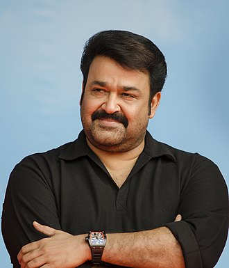

MOHANLAL

Mohanlal: Versatile actor with 350+ films. National Film Awards. Padma Bhushan recipient. Philanthropist. Known for "Drishyam," "Pulimurugan."
Mohanlal: Versatile actor with 350+ films. National Film Awards. Padma Bhushan recipient. Philanthropist. Known for "Drishyam," "Pulimurugan."
- Early Life: - Born on May 21, 1960, in Elanthoor, Kerala, India. - Real name: Mohanlal Viswanathan Nair. - Acting Career: - Debuted in the Malayalam film "Manjil Virinja Pookkal" (1980). - Known for his versatility, portraying a wide range of characters. - Has acted in over 350 films across multiple languages including Malayalam, Tamil, Telugu, and Hindi. - Notable films: "Vanaprastham," "Bharatham," "Kireedam," "Drishyam," "Pulimurugan." - Received numerous awards including multiple National Film Awards and Kerala State Film Awards. - Legacy: - Regarded as one of the greatest actors in Indian cinema. - Often referred to as "Lalettan" by fans. - His performances have set benchmarks for acting in Indian cinema. - Known for his dedication to roles and commitment to quality cinema. - Other Ventures: - Besides acting, he's a playback singer, producer, and distributor. - Co-owned the Malayalam production company Pranavam Arts. - Personal Life: - Married to Suchitra Mohanlal, with two children, Pranav and Vismaya. - Actively involved in philanthropy and social causes. - Maintains a low-key personal life despite immense fame. - Recognition: - Awarded the Padma Bhushan, India's third-highest civilian award, in 2019. - Honored with honorary doctorates from Sree Sankaracharya University of Sanskrit and the University of Calicut.